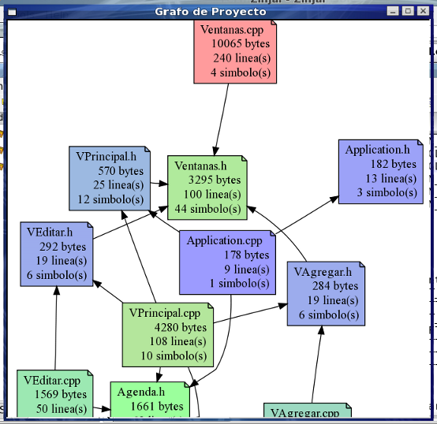

Grafo del Proyecto
El Grafo del Proyecto es una representación visual de los archivos fuentes que lo componen. Sólo concidera los archivos agrupados bajo las categorías Fuentes y Cabeceras en el Árbol de Proyecto. Cada archivo se representa como un nodo, donde su color indica su tamaño medido en cantidad de lineas. Los nodos rojos son los de mayor tamaño, los azules los de menor, y los verdes los archivos cuyo tamaño está cerca de la mediana (no media). Los arcos representan las inclusiones de un fuente en otro (directiva #include).

Para visualizar el grafo debe utilizar el comando Grafo del Proyecto del menú Herramientas.